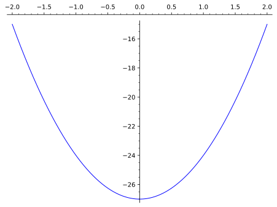

Derive Rolle’s theorem and the mean value theorem (MVT) as consequences of Theorem 20.11.
Interpret Rolle’s theorem and the MVT both geometrically (in terms of tangent lines) and physically (in terms of instantaneous rates of change).
Derive consequences of the MVT to various mathematical applications: e.g., characterization of functions \(f\) satisfying \(f'(x)=0\) for all \(x\text{,}\) existence of roots of functions within specific intervals, inequalities.
Theorem21.1.Rolle’s theorem.
Assume \(f\) is continuous on \([a,b]\) and differentiable on \((a,b)\text{.}\) If \(f(a)=f(b)\text{,}\) then there is an input \(c\in [a,b]\) satisfying \(f'(c)=0\text{.}\)
Proof.
Let \(C=f(a)=f(b)\) be the common value of \(f\) at the endpoints. If \(f(x)=C\) for all inputs \(x\in [a,b]\) (i.e., \(f\) is a constant function), then \(f'(x)=0\) for all inputs \(x\in (a,b)\text{,}\) and our desired conclusion is trivially satisfied.
Assume now that \(f\) is not constant. Since \(f\) is continuous on \([a,b]\) there are points \(c\) and \(d\) in \([a,b]\) where \(f\) attains its absolute maximum and minimum values. Since \(f\) is not constant on \([a,b]\text{,}\) we must have \(f(c)\ne C\) or \(f(d)\ne C\text{.}\) Assume without loss of generality that \(f(c)\ne C\) is an absolute extreme value of \(f\) on \([a,b]\text{.}\) The input \(c\) must be an interior point of \([a,b]\text{,}\) since \(f(c)\ne f(a)\) and \(f(c)\ne f(b)\text{.}\) Since \(f\) is differentiable everywhere on \((a,b)\text{,}\)Theorem 20.11 implies \(f'(c)=0\text{,}\) as desired.
Remark21.2.Interpretations of Rolle’s theorem.
Let \(f\) satisfy the assumptions of Rolle’s theorem on the interval \([a,b]\text{.}\)
Geometrically, we interpret Rolle’s theorem as follows: if the endpoints of the graph of \(f\) over \([a,b]\) lie on the same horizontal line, then there is an input \(c\in (a,b)\) for which the tangent line to the graph of \(f\) at \(c\) is horizontal.
In terms of rate of change, we interpret Rolle’s theorem as follows: if the average rate of change of \(f\) between \(a\) and \(b\) is equal to zero, then there is an input \(c\in (a,b)\) where the instantaneous rate of change \(f'(c)\) is equal to zero.
Rolle’s theorem turns out to be a special case of the mean value theorem, where the function in question satisfies \(f(a)=f(b)\text{.}\) As a peculiar twist, however, the mean value theorem can also be seen as just a “tilted” version of Rolle’s theorem. In logical terms, the two theorems, though quite different in content, are logically equivalent!
Theorem21.3.Mean value theorem (MVT).
Assume \(f\) is continuous on \([a,b]\) and differentiable on \((a,b)\text{.}\) There is an input \(c\in (a,b)\) satisfying
While traveling in Ontario, Dudley pilots his motor car along Queen Elizabeth Way (aka the QEW). The posted speed limit along this stretch of motorway is 120 km per hr. At 12 pm Dudley passes St. Catherines, and by 12:25 pm he reaches Hamilton, which is 60 km down the road. Prove: at some point during this excursion Dudley has exceeded the speed limit!
Solution.
Corollary21.5.Constant function characterization.
Assume \(f\) is continuous on an interval \(I\text{.}\) If \(f\) satisfies \(f'(x)=0\) for all interior points \(x\in I\text{,}\) then \(f\) is a constant function on \(I\text{.}\) As a consequence, a function is constant on an interval \(I\) if and only if its derivative is the zero function on \(I\text{.}\)
Proof.
Take any two distinct points \(c,d\in I\text{.}\) We may assume without loss of generality that \(c< d\text{.}\) The assumptions on \(f\) guarantee that it is both continuous (since differentiable) on \([c,d]\) and differentiable on the interior of \((c,d)\text{.}\) The mean value theorem then implies that we have
We have shown that for any \(c,d\in I\) we have \(f(c)=f(d)\text{.}\) In other words, \(f\) is a constant function on \(I\text{,}\) as desired.
Corollary21.6.Functions with identical derivatives.
Assume \(f\) and \(g\) are continuous on an interval \(I\text{.}\) If \(f'(x)=g'(x)\) for all interior points \(x\in I\text{,}\) then there is a constant \(C\in \R\) satisfying
\begin{equation*}
f(x)=g(x)+C
\end{equation*}
for all \(x\in I\text{.}\) In plain English, if two functions have identical derivative functions over an interval \(I\text{,}\) then they differ by a constant.
for all interior points \(x\in I\text{,}\) we conclude by Corollary 21.5 that \(h\) is a constant function on \(I\text{:}\) i.e., there is a constant \(C\) such that \(h(x)=C\) for all \(x\in I\text{.}\) But then
\begin{align*}
h(x) =C \text{ for all } x\in I\amp \implies f(x)-g(x)=C \text{ for all } x\in I\\
\amp \implies f(x)=g(x)+C \text{ for all } x\in I\text{,}
\end{align*}
as desired.
Example21.7.Number of roots.
Show that the function \(f(x)=x^3-27x-7\) has exactly one root in the interval \(I=[-2,2]\text{.}\)
Solution.
Since \(f\) is continuous everywhere, and satisfies \(f(-2)> 0\) and \(f(2)< 0\text{,}\) the intermediate value theorem implies there is an element \(c\in [-2,2]\) satisfying \(f(c)=0\text{:}\) i.e., \(f\) has at least one root \(c\in [-2,2]\text{.}\) It remains to show that \(c\) is the only root of \(f\) in \([-2,2]\text{.}\)
Suppose by contradiction that \(f\) had two distinct roots \(c,d\in [-2,2]\text{.}\) Without loss of generality, we can assume \(c< d\text{.}\) Since \(f\) is differentiable everywhere, the mean value theorem would imply that there exists \(e\in (c,d)\) satifying
where we have used the fact that \(f(c)=f(d)=0\) since \(c\) and \(d\) are roots of \(f\text{.}\) But this is impossible since, as the derivative \(f'(x)=3x^2-27\) satisfies \(f'(x)< 0\) for all \(x\in [-2,2]\text{.}\) (See diagram below.) Since we have reached a contradiction, we conclude that there is only one root of \(f\) lying in \([-2,2]\text{,}\) as desired.

Figure21.8.Graph of \(f'(x)=3x^2-27\)
Example21.9.Interesting inequality.
Prove that \(\sqrt{1+x}< 1+\frac{1}{2}x\) for all \(x> 0\text{.}\)
Hint.
Consider \(h(x)=\sqrt{1+x}-(1+\frac{1}{2}x)\text{.}\) We wish to show that \(h(x)< 0\) for all \(x> 0\text{.}\)
Solution.
Let \(h(x)=\sqrt{1+x}-(1+\frac{1}{2}x)\text{.}\) The desired inequality is equivalent to the inequality \(h(x)< 0\) for all \(x> 0\text{,}\) which we now endeavor to demonstrate. First observe that \(h'(x)< 0\) for all \(x> 0\text{.}\) Indeed, we have
Next, since \(h\) is continuous on and differentiable on \([0,\infty)\text{,}\) given any \(x> 0\text{,}\) the mean value theorem implies that there exists a \(c\in (0,x)\) satisfying
since \(x> 0\) and \(h'(c)< 0\text{.}\) We have shown that \(h(x)< 0\) for all \(x>0 \text{,}\) and hence that \(\sqrt{1+x}< 1+\frac{1}{2}x\) for all \(x> 0\text{.}\)
For the curious, we end with a useful corollary of the mean value theorem that yields a numerically more precise description of how good of an approximation the linearization \(L(x)\) of a function \(f(x)\) centered at \(a\) is for \(x\) near \(a\text{.}\) This result (and its proof) will not be assessed on any quiz or exam in this course.
Corollary21.10.Taylor’s theorem (\(k=1\)).
Assume \(f\) is twice differentiable on an interval \(I\) containing \(a\) as in interior point. Let \(L(x)=f'(a)(x-a)+f(a)\) be the linearization of \(f\) centered at \(a\text{.}\) For all \(x\in I\) we have